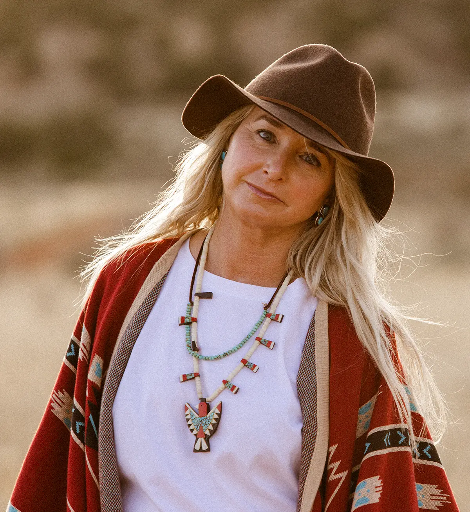

Hi - I am Jennifer Zona. Spiritual Director, Archetypal Consultant, End of Life Doula, Usui Reiki Master and the founder of La Loba Soul Support. My mission is to serve as a companion for individuals as they work through the challenges in life’s crossroads and guide them to engage in their capacity to empower and transform themselves.
My Story

I couldn’t tell you the month, the season, or even the year at this point, of when this shift inside me occurred. But one day, in my darkest moment yet, I realized that I had measured my success, fulfillment, and life’s satisfaction on a narrative that has been embedded in me as a result of it being embedded in our patriarchal culture for the last five thousand years. In the moments after, I became completely disillusioned with the outer world and no longer felt any nourishment from it. I had been on a path that I thought I was to be on - the path where I attained academic and financial success but that in reality left me exhausted, over-scheduled, and unbalanced.
So I left the comfort and security of ‘home’ behind me, and I set out on a new path, down the river of unconsciousness. I began using the notion of the old bone woman in the desert as described by Dr. Estés in her book Women Who Run With Wolves as a powerful, inspirational symbol – a guide for my inner journey to the soul.
This is a story of resurrection and the coming home to yourself.
The personal journey of transformation.
The Legend of La Loba
There is an old woman who lives in a hidden place that everyone knows but few have ever seen... The sole work of La Loba, [the Wolf Woman], is the collecting of bones. She is known to collect and preserve especially that which is in danger of being lost creatures: the deer, the rattlesnake, the crow. But her specialty is said to be wolves. She creeps and crawls and sifts through the montañas, mountains and arroyos, dry river beds, looking for wolf bones, and when she has assembled an entire skeleton, when the last bone is in place and the beautiful white sculpture of the creature is laid out before her, she sits by the fire and thinks about what song she will sing. And when she is sure, she stands over the creature, raises her arms over it, and sings out. That is when the rib bones and leg bones of the wolf begin to flesh out and the creature becomes furred. La Loba sings some more, and more of the creature comes into being; its tail curls upward, shaggy and strong.
And La Loba sings more and the wolf creature begins to breathe. And still La Loba sings so deeply that the floor of the desert shakes and as she sings, the wolf opens its eyes, leaps up, and runs away down the canyon.
“In finding our own story, we assemble all the parts of ourselves...”
Marion WoodmanJourney of Transformation
My image of that old woman guided me to recover the parts of myself that had become diluted and gone underground in the world of career and modern society. On this new path I carried with me a lifetime of suffering and sweetness, of mistakes and breakthroughs. On this journey of transformation I was confronted with all the striving I had done for things to be different. There were ‘the bones’ of me in that striving that I had forgotten and had left behind; a strong sense of who I was, what my place is in this world, what my service is in this life, and the power to create, to guard, and to transform. I learned that what I perceived to be in the way is actually the way. So I let go. I relaxed. I began a journey of gathering and singing over my newly found bones. All that effort of striving was replaced with a flood of peace, humor, loving kindness, and with a longing to live with direct access to the Divine inside the sanctuary of my soul. The La Loba story gave me context and helped me to move beyond the disparate parts of my story and towards healing.
La Loba keeps collecting bones and bringing wolves to life; and that is my service, too. Every time I pause to hear the Divine singing over my bones, I rise up with new eyes to see the lost bones of others. What song shall I sing over them?
There is always another way to look at darkness
I spent the last twenty years working in several different roles with my training as an educational psychologist, primarily working with the special needs population. I was passionate about this work till the day I walked away from it - something I never thought I could or would do. Towards the end of this career, when things were the darkest, I received a message from Spirit: “How much do I have to throw at you till you pay attention?” Literally. That was the message. I knew then that I could no longer ignore this calling. It wasn’t a question anymore if I wanted a relationship with the unknown. But the soul is uncertain and uncharted, and it takes courage, stamina, and space to go exploring that part of yourself. I spent too many years cycling in my dark night of the soul, but I began to understand that my ‘crisis’ was actually a spiritual crisis. This recognition finally allowed me to travel forward on the path toward healing and transformation instead of staying in the oscillating suffering from the dark night. As I have entered into the second part of this journey called life, it became obvious to me that the tools I used during the first part of the journey were no longer useful. I needed a whole new tool kit. I have spent years now learning to trust alternative ways of knowing self, others, and our world. I now know how to attend to and receive Spirit and truth, and thus become of greater service to the world. What I have learned and find so inspiring is that it is really only the grit of my experiences, not the over-thinking mental space, that is where true transformation occurs. I now look for invitations; and consider sufferings ‘graced potentials.’ Encouragement and support is essential to bring healing and transformation into form. The Divine has shown me the beauty of the raw energy at the intersection of the crossroads. And now this is where I most love to work.
Training
Through my own experience on healing and transformation I sought out certifications that allow me to be of the greatest service I can be to others. I deeply believe that each one of us has a profound impact on this world. I back that up with my commitment to extensive studies and experience.
- Still Point at Ghost Ranch; Spiritual Director
- Caroline Myss Educational (CMED) Institute; Archetypal Consultant
- Master Usui Reiki Practitioner by Certified Usui Master Teacher: Allison Feehan
- International End of Life Doula Association; End of Life Doula
- The Shift Global Mystics Certification; Certified Global Mystic
- Bachelor's Degree in Rhetoric & Writing
- Master’s Degree in Special Education with a Concentration in Educational Psychology / 20+ years working with children ages 3-21 and their families as a Diagnostician and Program Developer

La Loba Soul Support
A choice for personal growth is always available to us, but the true challenge that exists in every “crisis” is the question at the crossroad: can I engage in my capacity to empower myself or will I give in to that fear? When we’re at a crossroads, we’re invited to go into the unknown of our lives. This is not easy. This is work.
At the root of all the services I offer, I am a Spiritual Director. I am your companion to guide you to your own wisdom. My role is that of a respectful listener, holy witness, and facilitator in exploring life’s big questions. I feel grateful that I’ve been able to bring my love of archetypes, mythology and sacred teachings of global mystics to be in relationship to the service of other people... to you. In working with me you will come to learn and listen to your own wisdom. It is a different shift than one may be accustomed to, as we are not striving for “normal”; rather, we seek transformation. And for this to occur, it must happen at the street level... at the imperfect, vulnerable, gritty, messy crossroads of life. The utilization of the services that are offered work together to bring a deeper healing, a deeper reconciliation, a deeper awareness, and a fullness to your transformation.
Growth has many dark nights and evolution many more. Life will always be about transforming - a series of birth, growth, death and rebirths. There will always be some trepidation of the unknown, but you can exist in the space in-between.